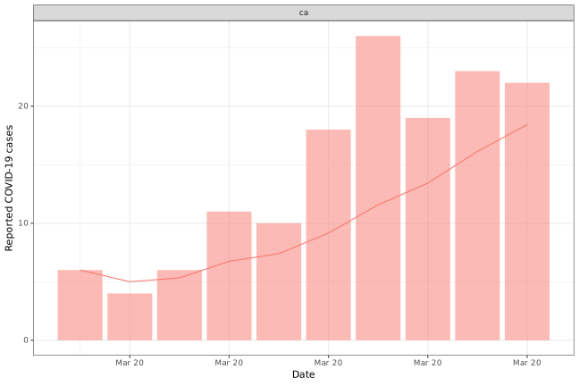
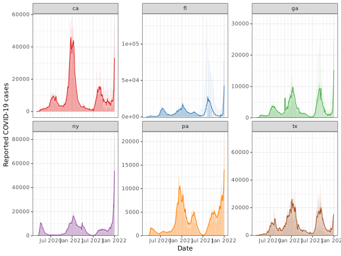
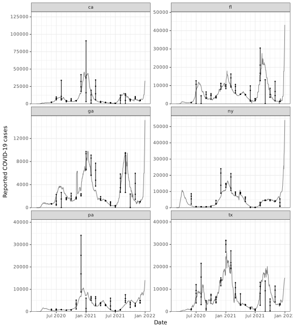

library(epidatr)
library(epiprocess)
library(epipredict)3 Sliding computations
A central tool in the {epiprocess} package is epi_slide(), which is based on the powerful functionality provided in the slider package. In epiprocess, to “slide” means to apply a computation—represented as a function or formula—over a sliding/rolling data window. The function always applies the slide inside each group and the grouping is assumed to be across all group keys of the epi_df (this is the grouping used by default if you do not group the epi_df with a group_by()).
By default, the .window_size units depend on the time_type of the epi_df, which is determined from the types in the time_value column of the epi_df. See the “Details” in epi_slide() for more.
As in getting started guide, we’ll fetch daily reported COVID-19 cases from CA, FL, NY, and TX (note: here we’re using new, not cumulative cases) using the epidatr package, and then convert this to epi_df format.
The example data we’ll use is part of the package and has 2,684 rows and 3 columns.
data(jhu_csse_daily_subset)
edf <- jhu_csse_daily_subset %>%
select(geo_value, time_value, cases) %>%
arrange(geo_value, time_value) %>%
as_epi_df()3.1 Optimized rolling mean and sums
For the two most common sliding operations, we offer two optimized versions: epi_slide_mean() and epi_slide_sum(). This example gets the 7-day trailing average of the daily cases. Note that the name of the column(s) that we want to average is specified as the first argument of epi_slide_mean().
edf %>%
group_by(geo_value) %>%
epi_slide_mean("cases", .window_size = 7, na.rm = TRUE) %>%
ungroup() %>%
head(10)#> An `epi_df` object, 10 x 4 with metadata:
#> * geo_type = state
#> * time_type = day
#> * as_of = 2024-08-22 19:40:48.296938
#>
#> # A tibble: 10 × 4
#> geo_value time_value cases slide_value_cases
#> * <chr> <date> <dbl> <dbl>
#> 1 ca 2020-03-01 6 6
#> 2 ca 2020-03-02 4 5
#> 3 ca 2020-03-03 6 5.33
#> 4 ca 2020-03-04 11 6.75
#> 5 ca 2020-03-05 10 7.4
#> 6 ca 2020-03-06 18 9.17
#> # ℹ 4 more rowsNote that we passed na.rm = TRUE to data.table::frollmean() via ... to epi_slide_mean.
The following computes the 7-day trailing sum of daily cases (and passed na.rm to data.table::frollsum() similarly):
edf %>%
group_by(geo_value) %>%
epi_slide_sum("cases", .window_size = 7, na.rm = TRUE) %>%
ungroup() %>%
head(10)#> An `epi_df` object, 10 x 4 with metadata:
#> * geo_type = state
#> * time_type = day
#> * as_of = 2024-08-22 19:40:48.296938
#>
#> # A tibble: 10 × 4
#> geo_value time_value cases slide_value_cases
#> * <chr> <date> <dbl> <dbl>
#> 1 ca 2020-03-01 6 6
#> 2 ca 2020-03-02 4 10
#> 3 ca 2020-03-03 6 16
#> 4 ca 2020-03-04 11 27
#> 5 ca 2020-03-05 10 37
#> 6 ca 2020-03-06 18 55
#> # ℹ 4 more rows3.2 General sliding with a formula
The previous computations can also be performed using epi_slide(), which can be used for more general sliding computations (but is much slower for the specific cases of mean and sum).
The same 7-day trailing average of daily cases can be computed by passing in a formula for the first argument of epi_slide():
edf %>%
group_by(geo_value) %>%
epi_slide(~ mean(.x$cases, na.rm = TRUE), .window_size = 7) %>%
ungroup() %>%
head(10)#> An `epi_df` object, 10 x 4 with metadata:
#> * geo_type = state
#> * time_type = day
#> * as_of = 2024-08-22 19:40:48.296938
#>
#> # A tibble: 10 × 4
#> geo_value time_value cases slide_value
#> * <chr> <date> <dbl> <dbl>
#> 1 ca 2020-03-01 6 6
#> 2 ca 2020-03-02 4 5
#> 3 ca 2020-03-03 6 5.33
#> 4 ca 2020-03-04 11 6.75
#> 5 ca 2020-03-05 10 7.4
#> 6 ca 2020-03-06 18 9.17
#> # ℹ 4 more rowsIf your formula returns a data.frame, then the columns of the data.frame will be unpacked into the resulting epi_df. For example, the following computes the 7-day trailing average of daily cases and the 7-day trailing sum of daily cases:
edf %>%
group_by(geo_value) %>%
epi_slide(
~ data.frame(cases_mean = mean(.x$cases, na.rm = TRUE), cases_sum = sum(.x$cases, na.rm = TRUE)),
.window_size = 7
) %>%
ungroup() %>%
head(10)#> An `epi_df` object, 10 x 5 with metadata:
#> * geo_type = state
#> * time_type = day
#> * as_of = 2024-08-22 19:40:48.296938
#>
#> # A tibble: 10 × 5
#> geo_value time_value cases cases_mean cases_sum
#> * <chr> <date> <dbl> <dbl> <dbl>
#> 1 ca 2020-03-01 6 6 6
#> 2 ca 2020-03-02 4 5 10
#> 3 ca 2020-03-03 6 5.33 16
#> 4 ca 2020-03-04 11 6.75 27
#> 5 ca 2020-03-05 10 7.4 37
#> 6 ca 2020-03-06 18 9.17 55
#> # ℹ 4 more rowsNote that this formula has access to all non-grouping columns present in the original epi_df object and must refer to them with the prefix .x$.... As we can see, the function epi_slide() returns an epi_df object with a new column appended that contains the results (from sliding), named slide_value as the default.
Some other information is available in additional variables:
.group_keyis a one-row tibble containing the values of the grouping variables for the associated group.ref_time_valueis the reference time value the time window was based on
# Returning geo_value in the formula
edf %>%
group_by(geo_value) %>%
epi_slide(~ .x$geo_value[[1]], .window_size = 7) %>%
ungroup() %>%
head(10)#> An `epi_df` object, 10 x 4 with metadata:
#> * geo_type = state
#> * time_type = day
#> * as_of = 2024-08-22 19:40:48.296938
#>
#> # A tibble: 10 × 4
#> geo_value time_value cases slide_value
#> * <chr> <date> <dbl> <chr>
#> 1 ca 2020-03-01 6 ca
#> 2 ca 2020-03-02 4 ca
#> 3 ca 2020-03-03 6 ca
#> 4 ca 2020-03-04 11 ca
#> 5 ca 2020-03-05 10 ca
#> 6 ca 2020-03-06 18 ca
#> # ℹ 4 more rows# Returning time_value in the formula
edf %>%
group_by(geo_value) %>%
epi_slide(~ .x$time_value[[1]], .window_size = 7) %>%
ungroup() %>%
head(10)#> An `epi_df` object, 10 x 4 with metadata:
#> * geo_type = state
#> * time_type = day
#> * as_of = 2024-08-22 19:40:48.296938
#>
#> # A tibble: 10 × 4
#> geo_value time_value cases slide_value
#> * <chr> <date> <dbl> <date>
#> 1 ca 2020-03-01 6 2020-02-24
#> 2 ca 2020-03-02 4 2020-02-25
#> 3 ca 2020-03-03 6 2020-02-26
#> 4 ca 2020-03-04 11 2020-02-27
#> 5 ca 2020-03-05 10 2020-02-28
#> 6 ca 2020-03-06 18 2020-02-29
#> # ℹ 4 more rowsWhile the computations above do not look very useful, these can be used as building blocks for computations that do something different depending on the geo_value or ref_time_value.
3.3 Slide the tidy way
Perhaps the most convenient way to setup a computation in epi_slide() is to pass in an expression for tidy evaluation. In this case, we can simply define the name of the new column directly as part of the expression, setting it equal to a computation in which we can access any columns of .x by name, just as we would in a call to dplyr::mutate(), or any of the dplyr verbs. For example:
slide_output <- edf %>%
group_by(geo_value) %>%
epi_slide(cases_7dav = mean(cases, na.rm = TRUE), .window_size = 7) %>%
ungroup() %>%
head(10)In addition to referring to individual columns by name, you can refer to epi_df time window as .x (.group_key and .ref_time_value are still available). Also, the tidyverse “pronouns” .data and .env can also be used if you need distinguish between the data and environment.
As a simple sanity check, we visualize the 7-day trailing averages computed on top of the original counts:
library(ggplot2)
theme_set(theme_bw())
ggplot(slide_output, aes(x = time_value)) +
geom_col(aes(y = cases, fill = geo_value), alpha = 0.5, show.legend = FALSE) +
geom_line(aes(y = cases_7dav, col = geo_value), show.legend = FALSE) +
facet_wrap(~geo_value, scales = "free_y") +
scale_x_date(minor_breaks = "month", date_labels = "%b %y") +
labs(x = "Date", y = "Reported COVID-19 cases")
As we can see from the top right panel, it looks like Texas moved to weekly reporting of COVID-19 cases in summer of 2021.
3.4 Slide with a function
We can also pass a function to the second argument in epi_slide(). In this case, the passed function .f must have the form function(x, g, t, ...), where
- “x” is an epi_df with the same column names as the archive’s
DT, minus theversioncolumn - “g” is a one-row tibble containing the values of the grouping variables for the associated group
- “t” is the ref_time_value for the current window
- “…” are additional arguments
Recreating the last example of a 7-day trailing average:
x <- edf %>%
group_by(geo_value) %>%
epi_slide(function(x, g, t) mean(x$cases, na.rm = TRUE), .window_size = 7, .new_col_name = "cases_7dav") %>%
ungroup()
x %>%
head(10)#> An `epi_df` object, 10 x 4 with metadata:
#> * geo_type = state
#> * time_type = day
#> * as_of = 2024-08-22 19:40:48.296938
#>
#> # A tibble: 10 × 4
#> geo_value time_value cases cases_7dav
#> * <chr> <date> <dbl> <dbl>
#> 1 ca 2020-03-01 6 6
#> 2 ca 2020-03-02 4 5
#> 3 ca 2020-03-03 6 5.33
#> 4 ca 2020-03-04 11 6.75
#> 5 ca 2020-03-05 10 7.4
#> 6 ca 2020-03-06 18 9.17
#> # ℹ 4 more rowsCode
cols <- RColorBrewer::brewer.pal(7, "Set1")[-6]
ggplot(x, aes(x = time_value)) +
geom_col(aes(y = cases, fill = geo_value),
alpha = 0.5,
show.legend = FALSE
) +
scale_y_continuous(expand = expansion(c(0, 0.05))) +
geom_line(aes(y = cases_7dav, col = geo_value), show.legend = FALSE) +
scale_fill_manual(values = cols) +
scale_color_manual(values = cols) +
facet_wrap(~geo_value, scales = "free_y") +
scale_x_date(minor_breaks = "month", date_labels = "%b %Y") +
labs(x = "Date", y = "Reported COVID-19 cases")
As we can see from the center top panel, it looks like Florida moved to weekly reporting of COVID-19 cases in summer of 2021, while California occasionally reported negative cases counts!
3.5 Running a local forecaster
As a more complex example, we preview some of the functionality of {epipredict} described in future chapters, and use a forecaster based on a local (in time) autoregression or “AR model”. AR models can be fit in numerous ways (using base R functions and various packages), but here we the arx_forecaster(), implemented in {epipredict} both provides a more advanced example of sliding a function over an epi_df object, and it allows us to be a bit more flexible in defining a probabilistic forecaster: one that outputs not just a point prediction, but a notion of uncertainty around this. In particular, our forecaster will output a point prediction along with an 90% uncertainty band, represented by a predictive quantiles at the 5% and 95% levels (lower and upper endpoints of the uncertainty band).
The function signature below, is a probabilistic AR forecaster. The lags argument indicates which lags to use in the model, and ahead indicates how far ahead in the future to make forecasts (both are encoded in terms of the units of the time_value column; so, days, in the working epi_df being considered in this vignette).
arx_forecaster <- function(
epi_df,
outcome, # the outcome column name in `epi_df`
predictors, # a character vector, containing 1 or more predictors in `epi_df`
trainer = quantile_reg(),
args_list = arx_args_list(
lags = c(0, 7, 14),
ahead = 7,
quantile_levels = c(0.05, 0.95)
)) {
...
}We go ahead and slide this AR forecaster over the working epi_df of COVID-19 cases. Note that we actually model the cases_7dav column, to operate on the scale of smoothed COVID-19 cases. This is clearly equivalent, up to a constant, to modeling weekly sums of COVID-19 cases.
fc_time_values <- seq(
from = as.Date("2020-06-01"),
to = as.Date("2021-12-01"),
by = "1 months"
)
fcasts <- epi_slide(
x,
.f = ~ arx_forecaster(
epi_data = .x,
outcome = "cases_7dav",
predictors = "cases_7dav",
trainer = quantile_reg(),
args_list = arx_args_list(ahead = 7)
)$predictions,
.window_size = 120,
.ref_time_values = fc_time_values
)
# grab just the relevant columns, and make them easier to plot
fcasts <- fcasts %>%
select(geo_value, time_value, cases_7dav, .pred, .pred_distn) %>%
pivot_quantiles_wider(".pred_distn")
fcasts#> # A tibble: 114 × 7
#> # Groups: geo_value [6]
#> geo_value time_value cases_7dav .pred `0.05` `0.5` `0.95`
#> <chr> <date> <dbl> <dbl> <dbl> <dbl> <dbl>
#> 1 ca 2020-06-01 2694 2332. 2266. 2332. 2957.
#> 2 ca 2020-07-01 6722 7979. 7081. 7979. 8999.
#> 3 ca 2020-08-01 8284. 7339. 6745. 7339. 7630.
#> 4 ca 2020-09-01 4707. 3291. 3264. 3291. 7571.
#> 5 ca 2020-10-01 3360. 4270. 3213. 4270. 5714.
#> 6 ca 2020-11-01 4441. 4172. 4028. 4172. 5491.
#> # ℹ 108 more rowsNote that we have used the argument .ref_time_values to compute the forecast at a specific subset of reference time values. We get out 4 new columns: fc_target_date, 0.05, 0.5, 0.95 that correspond to the date the forecast is for (rather than the date it was made on), the point forecast, and the lower and upper endpoints of the 95% prediction band.1
To finish off, we plot the forecasts at some times (spaced out by a few months) over the last year, at multiple horizons: 7, 14, 21, and 28 days ahead. To do so, we encapsulate the process of generating forecasts into a simple function, so that we can call it a few times.
k_week_ahead <- function(ahead = 7) {
epi_slide(
x,
~ arx_forecaster(
epi_data = .x,
outcome = "cases_7dav",
predictors = "cases_7dav",
trainer = quantile_reg(),
args_list = arx_args_list(ahead = ahead)
)$predictions,
.window_size = 120,
.ref_time_values = fc_time_values
) %>%
select(geo_value, time_value, cases_7dav, .pred, .pred_distn) %>%
pivot_quantiles_wider(".pred_distn")
}
# First generate the forecasts, and bind them together
z <- map(c(7, 14, 21, 28), k_week_ahead) %>% list_rbind()Code
ggplot(z) +
geom_line(data = x, aes(x = time_value, y = cases_7dav), color = "gray50") +
geom_ribbon(aes(
x = time_value, ymin = `0.05`, ymax = `0.95`,
group = time_value, fill = geo_value
), alpha = 0.4) +
geom_line(aes(x = time_value, y = `0.5`, group = time_value)) +
geom_point(aes(x = time_value, y = `0.5`, group = time_value), size = 0.5) +
# geom_vline(data = tibble(x = fc_time_values), aes(xintercept = x),
# linetype = 2, alpha = 0.5) +
facet_wrap(vars(geo_value), scales = "free_y", nrow = 3) +
scale_y_continuous(expand = expansion(c(0, 0.05))) +
scale_x_date(minor_breaks = "1 months", date_labels = "%b %Y") +
scale_fill_viridis_d(guide = "none", end = .9) +
labs(x = "Date", y = "Reported COVID-19 cases")
Two points are worth making. First, the AR model’s performance here is pretty spotty. At various points in time, we can see that its forecasts are volatile (its point predictions are all over the place), or overconfident (its bands are too narrow), or both at the same time. This is only meant as a simple demo and not entirely unexpected given the way the AR model is set up. The epipredict package, offers a suite of predictive modeling tools that improve on many of the shortcomings of the above simple AR model (simply using all states for training rather than 6 is a huge improvement).
Second, the AR forecaster here is using finalized data, meaning, it uses the latest versions of signal values (reported COVID-19 cases) available, for both training models and making predictions historically. However, this is not reflective of the provisional nature of the data that it must cope with in a true forecast task. Training and making predictions on finalized data can lead to an overly optimistic sense of accuracy; see, for example, (McDonald et al. 2021) and references therein. Fortunately, the epiprocess package provides a data structure called epi_archive that can be used to store all data revisions, and furthermore, an epi_archive object knows how to slide computations in the correct version-aware sense (for the computation at each reference time \(t\), it uses only data that would have been available as of \(t\)). We will revisit this example in the archive vignette.
If instead we had set
as_list_col = TRUEin the call toepi_slide(), then we would have gotten a list columnfc, where each element offccontains these results.↩︎